Prerequiste – Execution, Stages and Throughput
Registers Involved In Each Instruction Cycle:
- Memory address registers(MAR) : It is connected to the address lines of the system bus. It specifies the address in memory for a read or write operation.
- Memory Buffer Register(MBR) : It is connected to the data lines of the system bus. It contains the value to be stored in memory or the last value read from the memory.
- Program Counter(PC) : Holds the address of the next instruction to be fetched.
- Instruction Register(IR) : Holds the last instruction fetched.
The Instruction Cycle –
Each phase of Instruction Cycle can be decomposed into a sequence of elementary micro-operations. In the above examples, there is one sequence each for the Fetch, Indirect, Execute and Interrupt Cycles.
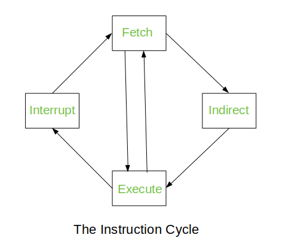
The Indirect Cycle is always followed by the Execute Cycle. The Interrupt Cycle is always followed by the Fetch Cycle. For both fetch and execute cycles, the next cycle depends on the state of the system.
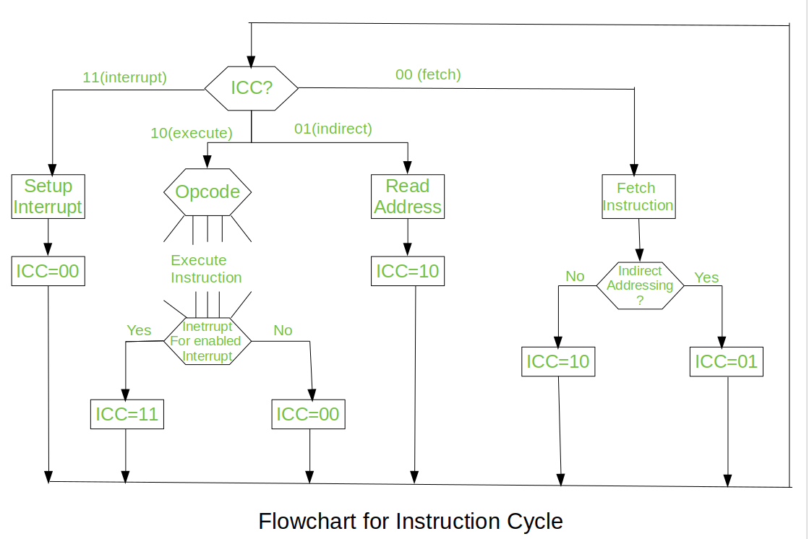
We assumed a new 2-bit register called Instruction Cycle Code (ICC). The ICC designates the state of processor in terms of which portion of the cycle it is in:-
00 : Fetch Cycle
01 : Indirect Cycle
10 : Execute Cycle
11 : Interrupt Cycle
At the end of the each cycles, the ICC is set appropriately.The above flowchart of Instruction Cycle describes the complete sequence of micro-operations, depending only on the instruction sequence and the interrupt pattern(this is a simplified example). The operation of the processor is described as the performance of a sequence of micro-operation.
Different Instruction Cycles:
- The Fetch Cycle –
At the beginning of the fetch cycle, the address of the next instruction to be executed is in the Program Counter(PC).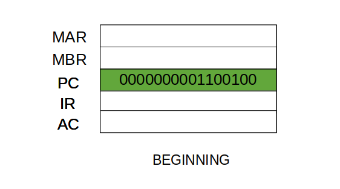
Step 1: The address in the program counter is moved to the memory address register(MAR), as this is the only register which is connected to address lines of the system bus.
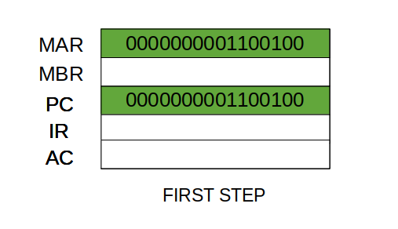
Step 2: The address in MAR is placed on the address bus, now the control unit issues a READ command on the control bus, and the result appears on the data bus and is then copied into the memory buffer register(MBR). Program counter is incremented by one, to get ready for the next instruction.(These two action can be performed simultaneously to save time)
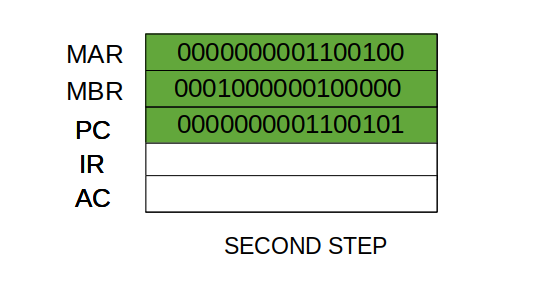
Step 3: The content of the MBR is moved to the instruction register(IR).
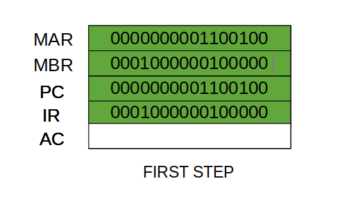
Thus, a simple Fetch Cycle consist of three steps and four micro-operation. Symbolically, we can write these sequence of events as follows:-
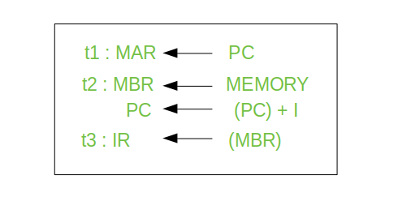
Here ‘I’ is the instruction length. The notations (t1, t2, t3) represents successive time units. We assume that a clock is available for timing purposes and it emits regularly spaced clock pulses. Each clock pulse defines a time unit. Thus, all time units are of equal duration. Each micro-operation can be performed within the time of a single time unit.
First time unit: Move the contents of the PC to MAR.
Second time unit: Move contents of memory location specified by MAR to MBR. Increment content of PC by I.
Third time unit: Move contents of MBR to IR.
Note: Second and third micro-operations both take place during the second time unit. - The Indirect Cycles –
Once an instruction is fetched, the next step is to fetch source operands. Source Operand is being fetched by indirect addressing. Register-based operands need not be fetched. Once the opcode is executed, a similar process may be needed to store the result in main memory. Following micro-operations takes place:-
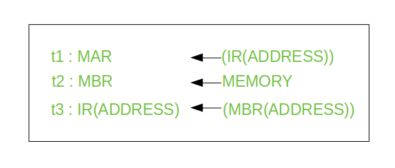
Step 1: The address field of the instruction is transferred to the MAR. This is used to fetch the address of the operand.
Step 2: The address field of the IR is updated from the MBR.(So that it now contains a direct addressing rather than indirect addressing)
Step 3: The IR is now in the state, as if indirect addressing has not been occurred.Note: Now IR is ready for the execute cycle, but it skips that cycle for a moment to consider the Interrupt Cycle .
- The Execute Cycle
The other three cycles(Fetch, Indirect and Interrupt) are simple and predictable. Each of them requires simple, small and fixed sequence of micro-operation. In each case same micro-operation are repeated each time around.
Execute Cycle is different from them. Like, for a machine with N different opcodes there are N different sequence of micro-operations that can occur.
Lets take an hypothetical example :-
consider an add instruction:Here, this instruction adds the content of location X to register R. Corresponding micro-operation will be:-
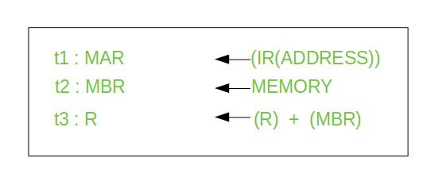
We begin with the IR containing the ADD instruction.
Step 1: The address portion of IR is loaded into the MAR.
Step 2: The address field of the IR is updated from the MBR, so the reference memory location is read.
Step 3: Now, the contents of R and MBR are added by the ALU.Lets take a complex example :-
Here, the content of location X is incremented by 1. If the result is 0, the next instruction will be skipped. Corresponding sequence of micro-operation will be :-
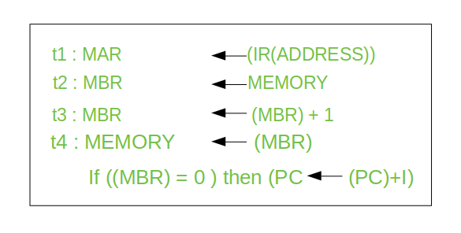
Here, the PC is incremented if (MBR) = 0. This test (is MBR equal to zero or not) and action (PC is incremented by 1) can be implemented as one micro-operation.
Note : This test and action micro-operation can be performed during the same time unit during which the updated value MBR is stored back to memory. - The Interrupt Cycle:
At the completion of the Execute Cycle, a test is made to determine whether any enabled interrupt has occurred or not. If an enabled interrupt has occurred then Interrupt Cycle occurs. The natare of this cycle varies greatly from one machine to another.
Lets take a sequence of micro-operation:-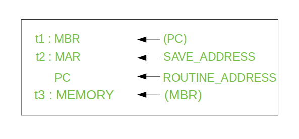
Step 1: Contents of the PC is transferred to the MBR, so that they can be saved for return.
Step 2: MAR is loaded with the address at which the contents of the PC are to be saved.
PC is loaded with the address of the start of the interrupt-processing routine.
Step 3: MBR, containing the old value of PC, is stored in memory.Note: In step 2, two actions are implemented as one micro-operation. However, most processor provide multiple types of interrupts, it may take one or more micro-operation to obtain the save_address and the routine_address before they are transferred to the MAR and PC respectively.